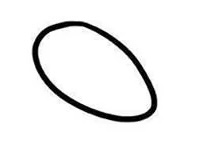

- Computer können ja “lesen” - geben wir ihnen viel zu lesen, zum Beispiel das “Internet”.
- Das gesamte Internet (~150 Zettabyte) ausgedruckt auf A4 nebeneinander reicht bis zu weit entfernten Sternen (mehr als 600 Lichtjahre entfernt!)
- etwa 42 Millionen mal die Entfernung Sonne - Erde!
- Derzeit sind Modelle auf etwa so viel wie auf 4 mal bis zum Mond reicht “trainiert”
- TROTZDEM: Der Computer lernt nur das nächste Wort vorherzusagen!
Gab es im alten Ägypten schon Dronen?
Warum wir Detektive für Künstliche Intelligenz werden sollten.
28. November 2024
Fantastischer Fund in Ägypten
- In der Nähe der Pyramiden wurde eine alte Drone
gefunden!

- Nun im Ägyptischen Museum ausgestellt

Was ist eigentlich künstliche Intelligenz?
- Erstaunlich: so eine richtig feste Beschreibung gibt es nicht!
- Wikipedia: Eigenschaft […], die ein Wesen befähigt, angemessen und vorausschauend in seiner Umgebung zu agieren
 SpielenSich unterhalten
SpielenSich unterhalten Kreativ sein
Kreativ sein Forschen
Forschen BauenTeamwork
BauenTeamwork
Bilder können verändert werden
Fotos automatisch bearbeiten (geschlossene Augen, störender Müll am Traumstrand…)
Eure hochgeladenen Bilder können leicht verändert werden!


Woher wissen wir welche Wörter folgen?
Wir haben ein “Gefühl” wie ein Satz weitergeht - entstanden durch viel
Zuhören, Reden und Lesen


Das geht auch bei Computern…

Wie machen wir Kunst?
Wie kann man zeichnen?



Wie schnitzt man eine Eule?


am einfachsten: man fängt grob an, und macht es dann immer feiner.
Und im Computer?
- Der Computer lernt aus “Rauschen” Bilder zu
erzeugen


Indizien für KI-erzeugtes
- Bilder
- unnatürliche Details (Hände, Ohren, Haare)
- Schrift
- Logikfehler (Spiegelungen, komische Details)
- “zu perfekt” (weiche Bilder, “10 nach 10”)
- Videos
- Sachen verschwinden oder erscheinen
- Flackern
- Texte
- sehr oberflächlich, förmlich, entschuldigend

Welches Foto ist echt?


(Encyclopedia Brittannica:
https://elearn.eb.com/real-vs-ai-images/)
Welches Foto ist echt?

(Encyclopedia Brittannica:
https://elearn.eb.com/real-vs-ai-images/)
Welches Foto ist echt?


(Encyclopedia Brittannica:
https://elearn.eb.com/real-vs-ai-images/)
Welches Foto ist echt?

(Encyclopedia Brittannica:
https://elearn.eb.com/real-vs-ai-images/)
Welches Foto ist echt?

(Encyclopedia Brittannica:
https://elearn.eb.com/real-vs-ai-images/)